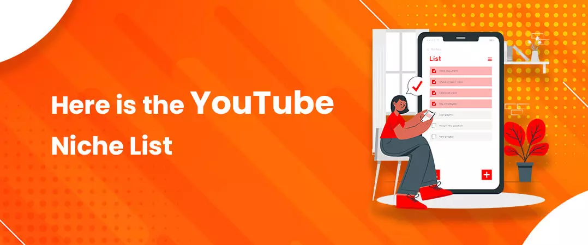
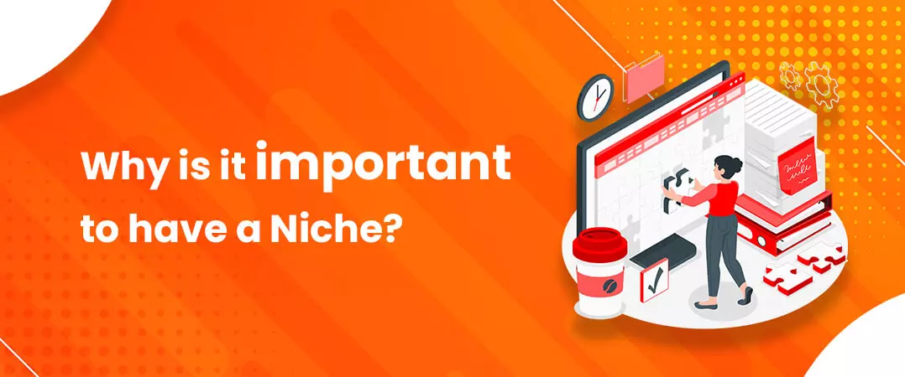
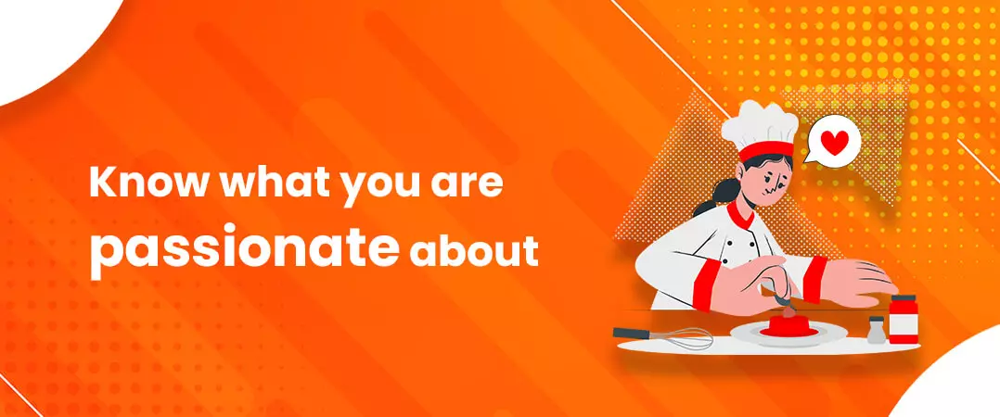
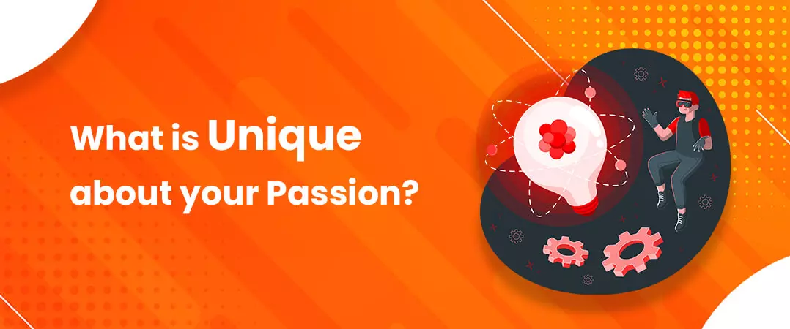
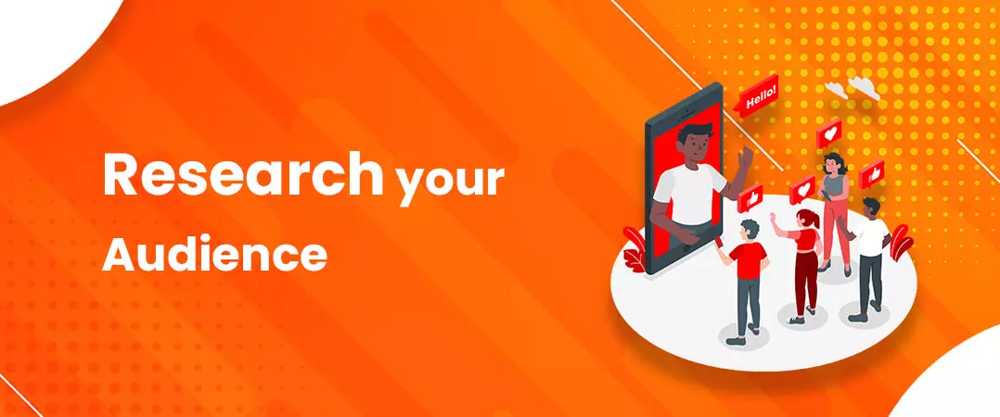
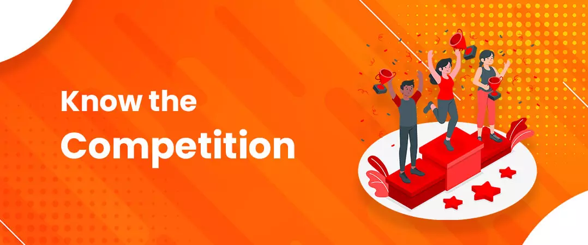
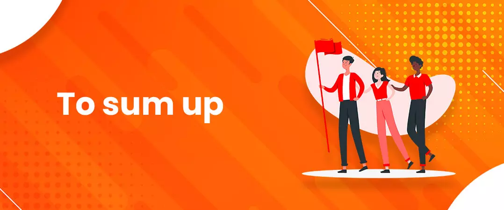

YouTube is a fast-growing platform with 2.3 billion users from all over the world which makes it crucial for any YouTuber to have a niche for their channel so that they can have a target audience and can build a better community.
Many YouTubers buy real subscribers from legit websites to gain exposure, but to grow their channel, they should also have the niche which people are interested in because genuine websites deliver real subscribers.
Niches are different categories or genres based on which a YouTuber creates a video. They can also be determined based on demographics and psychographics. For example, there’s a channel named ‘Super Woman’ which is based on comedy and entertainment. There are several factors that can help you decide your niche, but your interest will always play a vital role in deciding the same.
But do not worry, there are ample options available for you to choose from. By the end of this blog, you will be clear on what should be the niche of your YouTube channel. So, keep scrolling!
Here is the YouTube Niche List

YouTube has a good number of niches available on its platform but what makes you stand out is your uniqueness. So let me show you a few of the most profitable niches in 2021-
Gaming-
This niche is at a boom in the present times but it comes with high competition. In this genre, you can decide what type of game or which game you want to stream live on YouTube.
Tutorials-
Under this niche, you will come across many subcategories such as makeup tutorials, music tutorials etc.
Fashion-
Fashion will never go out of trend because it keeps changing with time without affecting the old styles. People like to try new things and fashion is all about creativity which brings something aesthetically new for the viewers.
Food-
Will we ever stop eating as long as we are alive? Obviously, no! And every city or state offering something different to eat makes this niche loaded with a lot of subcategories and competition.
Travel-
We all love to travel, do we not? Considering all the factors of a human life people make travel vlogs from and about local to international locations on YouTube, so now I guess you can imagine how variant this niche can be.
Humour-
Nobody regrets laughing and if you have the talent to make people laugh, then you are a light to this stressed-out world. But it’s not rare to have such talent among a large population. So, with this, you also need to find what’s different about you.
Health and Fitness-
Professionals from different fields on YouTube are sharing information on how to remain fit and healthy which has persuaded people to take care of their health who once neglected it.
All of the above-mentioned niches are highly competitive only if you make videos about what most YouTubers are making. If you want to go for low competition niches on YouTube, then there are two options for you-
1. Make content in a specialised field such as finance because it is a niche in which not all people are qualified. Also, money is an important factor in everyone’s life, which is why we all want to learn about it for having a secure future.
2. Find a uniquely specific category under one of the above-mentioned niches to target a specific audience that is in need of the information or content you are making.
The more specific you are, the better it is for your YouTube channel because even after selecting a niche, there come to its subcategories, again from which you have to make a choice. There can be many unexplored YouTube niches within the above-mentioned categories that can only be discovered by you. All you need to do is brainstorm some creative ideas.
Why is it important to have a Niche?

What is life without a purpose? Nothing. The same is the case with YouTube, a channel without intent is doomed.
There are many people who want to earn through YouTube because they are fascinated by the idea of it. So, if you are one of them, then without knowing what you are going to deliver to the audience, do not jump into it.
YouTubers buy YouTube comments to increase their engagement , but sometimes, they do not get the desired results because of the choice of their niche. Generate some innovative YouTube niche ideas and then start uploading, so that your videos get views and engagement because only then, your content will be able to generate revenue for you.
Steps on How to Find Your Niche on YouTube
1. Know what you are passionate about

Is there anything you can do even after someone wakes you up at 3 AM? If yes, and you are that passionate about it, then that is something you should consider choosing as a niche for your YouTube channel.
I am sure you do not want to choose a topic just because it is one of the most profitable niches, and if what you are interested in is quite vague then do research about that interest and see what you can create out of it and how you can serve your audience through it.
2. What is Unique about your Passion?

Well, now when you know what you are passionate about. It’s time to make something unique out of it, but not too unique that no one’s searching about it.
You need to give people a reason to watch your videos, otherwise, why would they consider consuming your content when they already know a popular YouTuber creating videos in the same niche.
3. Research your Audience

When you know what is unique about your content or how you can make it unique, your next step is to make sure there is a specific audience who are interested in your specified niche. For example, if you are making videos on cooking and your specification is quick healthy recipes then your target audience can be people living alone in metro cities who need to cook as well as run for their work.
YouTube is localized in 100 countries which makes it a global platform. That means you are not limited to your country, but your video can cross borders too. This is why only through audience research and brainstorming you can generate various YouTube niche ideas.
4. Know the Competition

Each day, in total 720,000 hours of video are uploaded on YouTube Do not be scared, not all of them are your competition. Your competition is the YouTubers from your same niche. You need to know how tough your competition is to survive in the niche you have chosen.
If your niche is in high demand and less competition, then it is more likely that you may achieve success in a lesser time span. But if there is a lot of competition in the YouTube niche you have chosen, then it will be quite difficult for you to get success as soon as you hope for it. It is not impossible, but it will take a lot of effort, which is why many YouTubers buy YouTube likes from legit websites to overcome the competition.
5. Deliver at least one of the 3 E’s

Your content will do better only if you deliver the viewers at least one of the three E’s which are-
Educate-
Informing them about something which they are keen to learn about will help your video get more views.
Entertain-
If you are able to entertain people and retain their interest till the very end of your video, then consider yourself a successful YouTuber.
Encourage-
If you can inspire them to do better in their lives, then they will come back to see your videos every time you upload them.
To sum up

There are plenty of niches and their subcategories available to you. You just need to keep in mind the points discussed on how to find your niche on YouTube and you will be able to pick up a perfect niche for your channel. Although I must say, it is quite fun and a creative task to decide a niche for a YouTube channel.
Feel free to share!